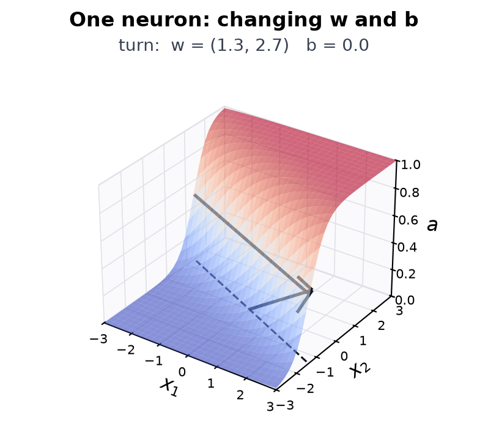
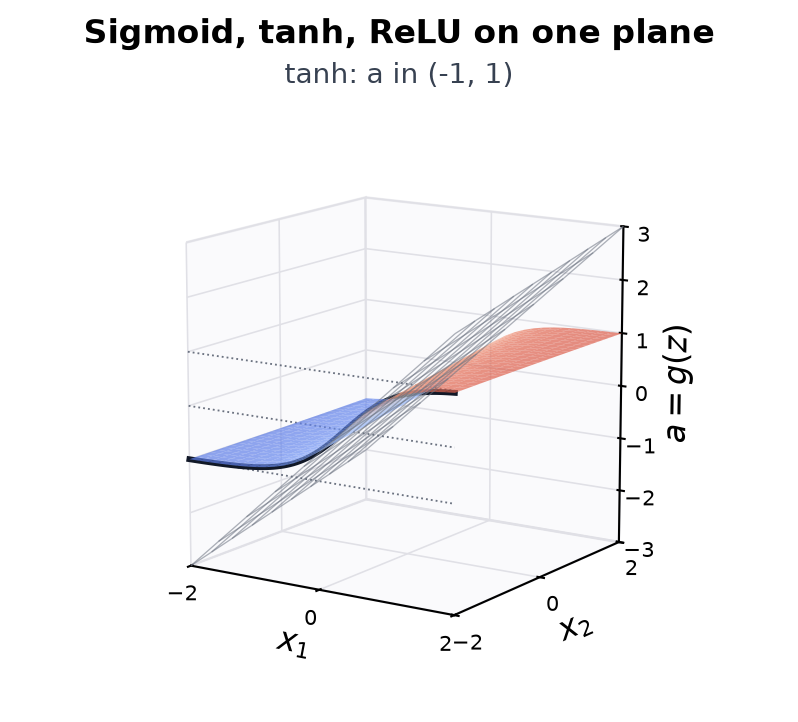
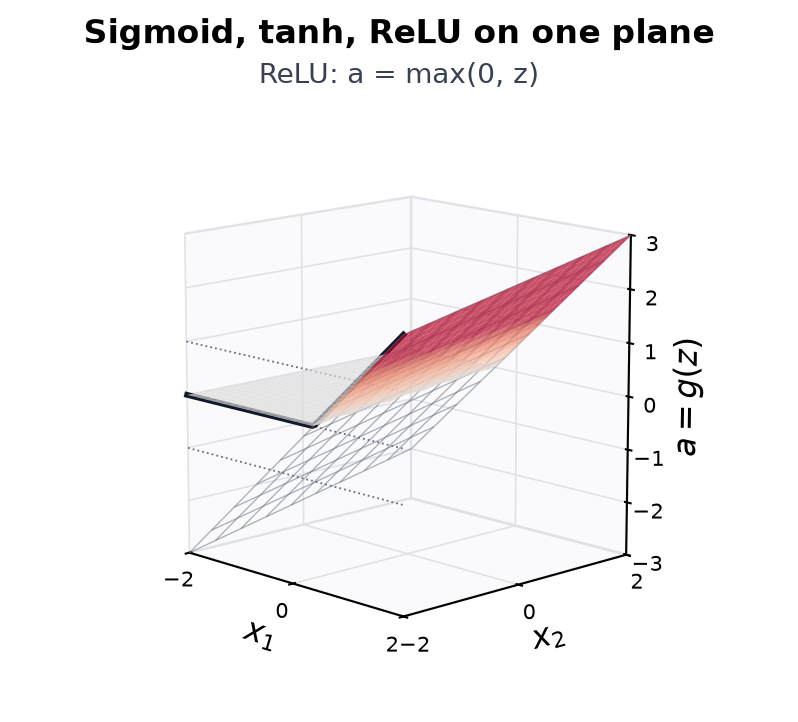
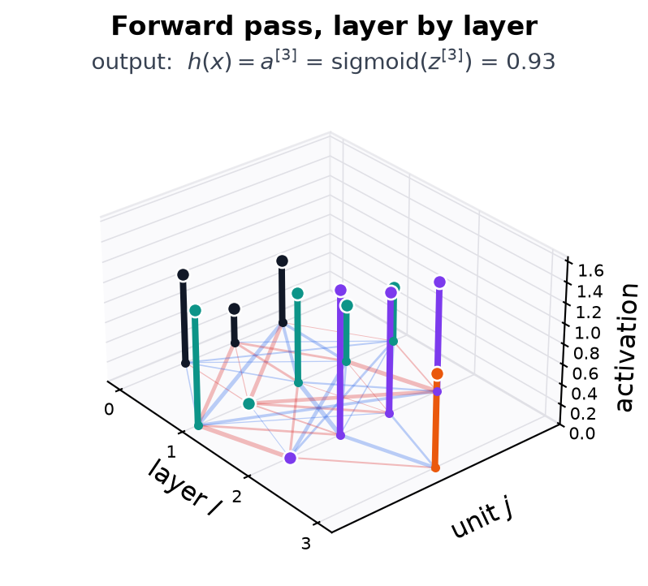
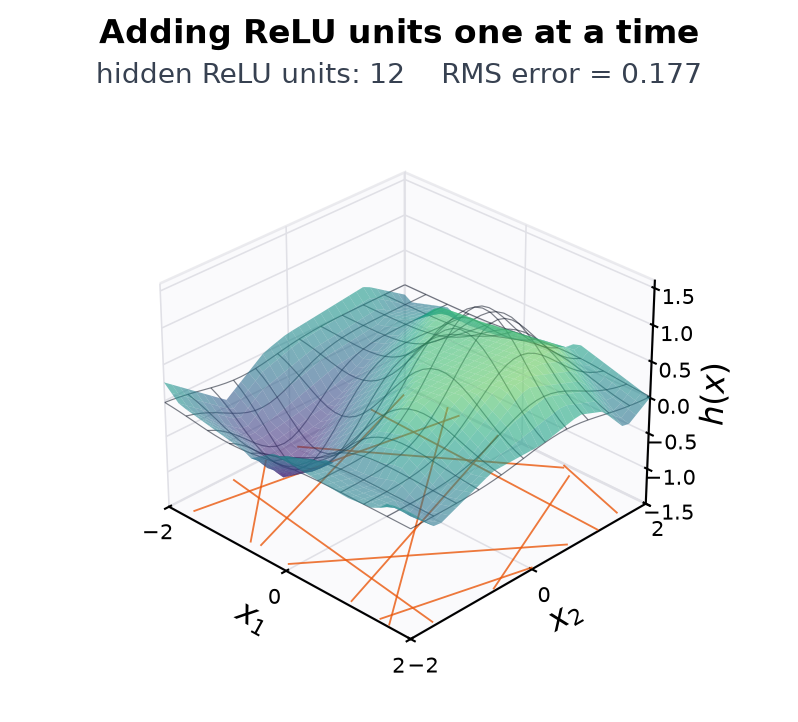
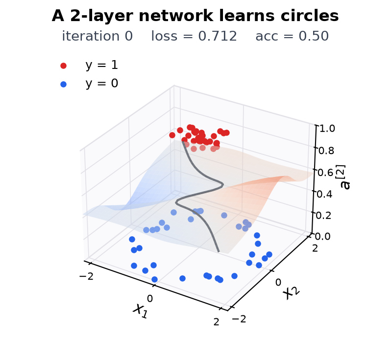

Neural Networks: Basics
Theory
इस lecture में: Logistic Regression से एक neuron तक का रास्ता, hidden units और end-to-end learning, layers का notation और forward propagation, activation functions (sigmoid, tanh, ReLU) और non-linearity क्यों ज़रूरी है, vectorization, output layers और उनके loss functions, parameters गिनना, XOR problem, और universal approximation का idea।
1. एक line में idea
Logistic Regression एक अकेली इकाई है: वह inputs का weighted sum लेती है और उसे sigmoid से गुज़ार देती है। ऐसी इकाई को neuron कहते हैं। अकेला neuron सिर्फ़ सीधी decision boundary (line या plane) बना सकता है। Neural network में हम बहुत सारे neurons को layers में जोड़ देते हैं: एक layer के outputs अगली layer के inputs बन जाते हैं। बीच की layers data से अपने काम के features खुद सीख लेती हैं, इसलिए पूरा network टेढ़ी-मेढ़ी boundaries और जटिल functions भी सीख सकता है।
इस lecture में हम सिर्फ़ यह देखेंगे कि network prediction कैसे निकालता है (forward propagation)। Parameters कैसे सीखे जाते हैं (backpropagation), यह अगले lecture का विषय है।
2. Logistic Regression से एक neuron तक
Logistic Regression में \(h_\theta(x) = g(\theta^T x)\) था। Neural networks में intercept को अलग लिखने का रिवाज है: weights \(w\) और bias \(b\)। एक neuron दो काम करता है:
\[z = w^T x + b = \sum_{j=1}^{n} w_j x_j + b, \qquad a = g(z)\]
- \(z\) को pre-activation कहते हैं: यह inputs का weighted sum है।
- \(g\) activation function है, और \(a\) neuron का output है, जिसे activation कहते हैं।
\(g\) अगर sigmoid हो, तो यह neuron ठीक Logistic Regression है। \(w\) की दिशा बताती है कि output किस तरफ़ बढ़ता है, \(w\) का size बताता है कि बदलाव कितना तीखा है, और \(b\) boundary को आगे-पीछे खिसकाता है।
3. Hidden units: घर की कीमत वाला example
मान लीजिए घर की कीमत का अंदाज़ा लगाना है और inputs चार हैं: size, bedrooms की संख्या, zip code, और मोहल्ले की wealth। एक समझदार इंसान पहले बीच के कुछ features सोचेगा:
- size और bedrooms से पता चलता है कि घर कितने बड़े family के लिए ठीक है।
- zip code से पता चलता है कि इलाका कितना walkable है।
- zip code और wealth से school quality का अंदाज़ा लगता है।
कीमत इन तीन बीच वाले features पर निर्भर करती है। हर बीच वाले feature को एक neuron मान लें, तो यह एक छोटा neural network है: 4 inputs, 3 hidden units, 1 output।
असली neural network में हम यह नहीं बताते कि कौन सा hidden unit क्या नापेगा, और न यह कि वह किन inputs को देखेगा। हर hidden unit सारे inputs से जुड़ा होता है (fully-connected layer)। हम सिर्फ़ \((x, y)\) के जोड़े देते हैं, और training खुद तय करती है कि बीच के features क्या हों। इसे end-to-end learning कहते हैं। "Hidden" नाम इसीलिए है: training set में इन units का सही मान कहीं नहीं लिखा होता।
4. Layers, Notation और Forward Propagation
Layer का number square bracket में ऊपर लिखा जाता है, ताकि वह example के number \(x^{(i)}\) से अलग दिखे।
| Symbol | मतलब |
|---|---|
| \(L\) | layers की संख्या (input layer को गिना नहीं जाता) |
| \(n^{[l]}\) | layer \(l\) में units की संख्या, और \(n^{[0]} = n\) |
| \(W^{[l]}\) | layer \(l\) का weight matrix, size \(n^{[l]} \times n^{[l-1]}\) |
| \(b^{[l]}\) | layer \(l\) का bias vector, size \(n^{[l]}\) |
| \(z^{[l]}\) | layer \(l\) के pre-activations (vector) |
| \(a^{[l]}\) | layer \(l\) के activations, और \(a^{[0]} = x\) |
| \(g^{[l]}\) | layer \(l\) का activation function |
\(W^{[l]}\) की \(j\)-वीं row, layer \(l\) के \(j\)-वें neuron का weight vector है। यानी \(W^{[l]}_{jk}\) वह weight है जो पिछली layer के unit \(k\) को इस layer के unit \(j\) से जोड़ता है।
2-layer network (एक hidden layer और एक output layer) का forward propagation:
\[\begin{aligned} z^{[1]} &= W^{[1]} x + b^{[1]}, & a^{[1]} &= g^{[1]}(z^{[1]}) \\ z^{[2]} &= W^{[2]} a^{[1]} + b^{[2]}, & a^{[2]} &= g^{[2]}(z^{[2]}) = h_\theta(x) \end{aligned}\]
यहाँ \(g\) vector के हर element पर अलग-अलग लगता है। General रूप में, \(l = 1, 2, \dots, L\) के लिए बारी-बारी से:
\[z^{[l]} = W^{[l]} a^{[l-1]} + b^{[l]}, \qquad a^{[l]} = g^{[l]}(z^{[l]})\]
आख़िरी activation \(a^{[L]}\) ही network का prediction है। हर layer बस वही करती है जो एक neuron करता है, फ़र्क इतना है कि कई neurons एक साथ matrix के रूप में लिखे गए हैं।
5. Activation functions
| नाम | \(g(z)\) | Range | \(g'(z)\) |
|---|---|---|---|
| sigmoid | \(\dfrac{1}{1 + e^{-z}}\) | \((0, 1)\) | \(g(z)\,(1 - g(z))\) |
| tanh | \(\dfrac{e^{z} - e^{-z}}{e^{z} + e^{-z}}\) | \((-1, 1)\) | \(1 - g(z)^2\) |
| ReLU | \(\max(0, z)\) | \([0, \infty)\) | \(z > 0\) पर \(1\), \(z < 0\) पर \(0\) |
- sigmoid का output probability की तरह पढ़ा जा सकता है, इसलिए binary classification की output layer में यही लगता है। Hidden layers में यह कम पसंद किया जाता है, क्योंकि बड़े \(\lvert z \rvert\) पर यह सपाट हो जाता है (saturate) और derivative लगभग zero हो जाता है।
- tanh असल में खिंचा हुआ sigmoid है: \(\tanh(z) = 2\,\sigma(2z) - 1\), जहाँ \(\sigma\) sigmoid है। इसका output zero के दोनों तरफ़ फैला होता है, जो अगली layer के लिए अच्छा है। पर saturation की दिक्कत इसमें भी है।
- ReLU (Rectified Linear Unit) सबसे सरल है: negative को zero कर दो, positive को वैसा ही रहने दो। Positive हिस्से में derivative हमेशा \(1\) रहता है, इसलिए गहरे networks में gradients कमज़ोर नहीं पड़ते। आजकल hidden layers के लिए यही पहली पसंद है।
Non-linearity क्यों ज़रूरी है
मान लीजिए हम activation हटा दें, यानी हर जगह \(g(z) = z\) रखें। तब 2-layer network यह निकालता है:
\[\begin{aligned} a^{[2]} &= W^{[2]} a^{[1]} + b^{[2]} = W^{[2]} \left( W^{[1]} x + b^{[1]} \right) + b^{[2]} \\ &= \underbrace{W^{[2]} W^{[1]}}_{\tilde{W}}\, x + \underbrace{W^{[2]} b^{[1]} + b^{[2]}}_{\tilde{b}} = \tilde{W} x + \tilde{b} \end{aligned}\]
यह फिर से \(x\) का एक linear function है। यही तर्क दोहराने पर 100 linear layers भी सिमटकर एक ही linear map बन जाती हैं: \(\tilde{W} = W^{[L]} \cdots W^{[2]} W^{[1]}\)। यानी non-linear activation के बिना गहराई का कोई फ़ायदा नहीं, और network Linear Regression (या sigmoid output के साथ Logistic Regression) से ज़्यादा कुछ नहीं कर सकता।
6. Vectorization: सारे examples एक साथ
\(m\) examples पर Python का loop चलाना बहुत धीमा है। इसकी जगह सारे examples को एक matrix के columns बना लें:
\[X = \begin{bmatrix} x^{(1)} & x^{(2)} & \cdots & x^{(m)} \end{bmatrix} \in \mathbb{R}^{n \times m}\]
तब पूरी layer एक matrix multiplication में निकल जाती है (\(A^{[0]} = X\)):
\[Z^{[l]} = W^{[l]} A^{[l-1]} + b^{[l]}, \qquad A^{[l]} = g^{[l]}(Z^{[l]})\]
\(Z^{[l]}\) का size \(n^{[l]} \times m\) है, और इसका \(i\)-वाँ column ठीक \(z^{[l](i)}\) है, क्योंकि matrix product \(W A\) का \(i\)-वाँ column \(W\) गुणा \(A\) का \(i\)-वाँ column होता है। \(b^{[l]}\) एक ही column है, पर उसे हर column में जोड़ना है। NumPy यह अपने आप कर देता है, इसे broadcasting कहते हैं। गणित की भाषा में यह \(b^{[l]} \mathbf{1}^T\) जोड़ना है, जहाँ \(\mathbf{1}\) में \(m\) ones हैं।
गिनती वही रहती है, पर काम Python के loop की जगह optimized linear algebra code (और GPU) करता है। फ़र्क अक्सर 10 से 100 गुना या उससे भी ज़्यादा होता है।
ध्यान दें: Lecture 2 के design matrix में हर example एक row था। यहाँ CS229 के notes की तरह हर example एक column है, ताकि equations ऊपर वाले एक example के रूप जैसी ही दिखें।
7. Output layer और Loss
Hidden layers features बनाती हैं। आख़िरी layer problem के हिसाब से चुनी जाती है, और हर output layer के साथ उसका अपना loss आता है। नीचे \(a = a^{[L]}\) और \(z = z^{[L]}\) है।
| Problem | Output activation | Loss \(\mathcal{L}(a, y)\) |
|---|---|---|
| Binary classification, \(y \in \{0, 1\}\) | sigmoid: \(a = \dfrac{1}{1 + e^{-z}}\) | log loss: \(-\left[ y \log a + (1 - y) \log (1 - a) \right]\) |
| \(K\) classes, \(y\) one-hot vector | softmax: \(a_k = \dfrac{e^{z_k}}{\sum_{j=1}^{K} e^{z_j}}\) | cross-entropy: \(-\sum_{k=1}^{K} y_k \log a_k\) |
| Regression, \(y \in \mathbb{R}\) | linear: \(a = z\) | squared error: \(\frac{1}{2} (a - y)^2\) |
ये तीनों जोड़े Lecture 3 और 4 से आए हैं: हर loss किसी distribution (Bernoulli, Multinomial, Gaussian) का negative log-likelihood है। यानी network को train करना भी Maximum Likelihood ही है। पूरे training set का cost हर example के loss का औसत है:
\[J(W, b) = \frac{1}{m} \sum_{i=1}^{m} \mathcal{L}\left( a^{[L](i)}, y^{(i)} \right)\]
\(J\) को घटाने के लिए हमें हर \(W^{[l]}\) और \(b^{[l]}\) के लिए gradient चाहिए। उसे निकालने का तरीका (backpropagation) अगले lecture में है।
8. Parameters गिनना
Layer \(l\) में \(n^{[l]} \times n^{[l-1]}\) weights और \(n^{[l]}\) biases होते हैं। इसलिए कुल parameters:
\[\sum_{l=1}^{L} \left( n^{[l]}\, n^{[l-1]} + n^{[l]} \right)\]
उदाहरण: 64 inputs, 32 hidden units और 10 outputs वाले network में \((32 \cdot 64 + 32) + (10 \cdot 32 + 10) = 2080 + 330 = 2410\) parameters हैं। ध्यान दें कि गिनती पड़ोसी layers के sizes के गुणा से बढ़ती है, इसलिए चौड़ी layers बहुत जल्दी महँगी हो जाती हैं।
9. XOR: जहाँ एक neuron हार जाता है
XOR में चार points हैं: \((0,0) \to 0\), \((0,1) \to 1\), \((1,0) \to 1\), \((1,1) \to 0\)। क्या कोई linear classifier, जो \(w_1 x_1 + w_2 x_2 + b > 0\) होने पर \(1\) बोले, इन्हें सही कर सकता है? चारों points से चार शर्तें मिलती हैं:
\[b \le 0, \qquad w_2 + b > 0, \qquad w_1 + b > 0, \qquad w_1 + w_2 + b \le 0\]
बीच की दो शर्तें जोड़ने पर \(w_1 + w_2 + 2b > 0\), यानी \(w_1 + w_2 + b > -b \ge 0\)। यह चौथी शर्त से टकराता है। इसलिए कोई भी line XOR को अलग नहीं कर सकती।
अब दो ReLU hidden units लें: \(a^{[1]}_1 = \max(0,\, x_1 + x_2)\) और \(a^{[1]}_2 = \max(0,\, x_1 + x_2 - 1)\), और output \(a^{[1]}_1 - 2 a^{[1]}_2\) रखें।
| \(x_1\) | \(x_2\) | \(y\) | \(a^{[1]}_1\) | \(a^{[1]}_2\) | \(a^{[1]}_1 - 2 a^{[1]}_2\) |
|---|---|---|---|---|---|
| 0 | 0 | 0 | 0 | 0 | 0 |
| 0 | 1 | 1 | 1 | 0 | 1 |
| 1 | 0 | 1 | 1 | 0 | 1 |
| 1 | 1 | 0 | 2 | 1 | 0 |
Output ठीक \(y\) के बराबर है। असली बात यह है कि hidden layer ने points को एक नई जगह \((a^{[1]}_1, a^{[1]}_2)\) में पहुँचा दिया, जहाँ वे \((0,0)\), \((1,0)\), \((1,0)\) और \((2,1)\) हैं। इस नई जगह में एक सीधी line उन्हें अलग कर देती है। Hidden layer का काम यही है: data को ऐसे मोड़ना कि आख़िरी layer का linear classifier काम कर सके।
10. Universal Approximation
Idea (informal): एक hidden layer वाला network, जिसमें activation non-linear हो (sigmoid, tanh, ReLU) और hidden units काफ़ी हों, किसी भी continuous function को एक सीमित region पर जितनी चाहें उतनी accuracy से approximate कर सकता है।
ReLU के साथ इसे ऐसे सोचें: हर hidden unit surface में एक मोड़ (fold) जोड़ता है, यानी एक line जिसके एक तरफ़ वह zero है और दूसरी तरफ़ ढलान है। बहुत सारे मोड़ जोड़ने पर टुकड़ों में सपाट (piecewise linear) surface बनती है, जो किसी भी चिकनी surface से चिपक सकती है। जितने ज़्यादा units, उतने छोटे टुकड़े, उतना अच्छा fit।
यह result तीन बातें नहीं कहता:
- कितने units चाहिए (संख्या बहुत बड़ी हो सकती है)।
- Gradient Descent वे weights ढूँढ ही लेगा।
- सीखा हुआ function नए data पर भी अच्छा चलेगा (overfitting का सवाल बना रहता है)।
Practice में कई layers वाला (deep) network अक्सर वही function बहुत कम units में बना लेता है, क्योंकि हर layer पिछली layer के features को दोबारा इस्तेमाल करती है।
11. Practical बातें और आम गलतियाँ
- Shapes जाँचें: सबसे आम bug गलत shape है। \(W^{[l]}\) का size \(n^{[l]} \times n^{[l-1]}\), \(A^{[l]}\) का \(n^{[l]} \times m\), और \(b^{[l]}\) का \(n^{[l]} \times 1\) होना चाहिए। Code में
assertलगाने से घंटों बचते हैं। - Layers की गिनती: "2-layer network" का मतलब एक hidden layer और एक output layer है। Input layer नहीं गिनी जाती।
- Hidden layer में linear activation न रखें: section 5 के हिसाब से वह layer बेकार हो जाती है।
- Hidden layers में ReLU से शुरू करें। sigmoid को binary output के लिए और softmax को multi-class output के लिए रखें।
- Softmax को संभलकर निकालें: बड़े \(z\) पर \(e^{z}\) overflow कर जाता है। exponent लेने से पहले \(z\) में से उसका maximum घटा दें, जवाब नहीं बदलता। \(\log 0\) से बचने के लिए \(a\) को बहुत छोटे number से नीचे न जाने दें।
- Weights को zero से शुरू न करें: तब सारे hidden units एक जैसे रह जाते हैं। छोटे random numbers से शुरू करें (कारण अगले lecture में)।
- Inputs को scale करें (mean 0, standard deviation 1), जैसे Lecture 2 में किया था।
12. खुद से पूछें
- एक network में 10 inputs, 5-5 units की दो hidden layers और 1 output है। इसमें कुल कितने parameters हैं? अगर सारे activations linear हों, तो वही function कितने parameters में लिखा जा सकता है?
- Vectorized रूप में \(Z^{[1]} = W^{[1]} X + b^{[1]}\) है। अगर \(n = 3\), \(n^{[1]} = 4\) और \(m = 100\) हो, तो \(W^{[1]}\), \(X\), \(b^{[1]}\) और \(Z^{[1]}\) के shapes क्या हैं?
- XOR वाले example में hidden units ReLU की जगह linear होते, तो \((a^{[1]}_1, a^{[1]}_2)\) वाली जगह में points कहाँ पहुँचते? क्या तब भी एक line उन्हें अलग कर पाती?
3D Animations



क्या देखें: ज़मीन पर दो inputs \(x_1, x_2\) हैं और ऊँचाई एक sigmoid neuron का output \(a = g(w_1 x_1 + w_2 x_2 + b)\) है। काला तीर \(w\) है और काली रेखा वह boundary है जहाँ \(a = 0.5\) है। पहले \(w\) का size बढ़ता है: ढलान तीखी होकर सीढ़ी जैसी बन जाती है। फिर \(w\) की दिशा घूमती है: पूरी surface उसी के साथ घूम जाती है, क्योंकि output हमेशा \(w\) की दिशा में बढ़ता है। अंत में \(b\) बदलता है: boundary बिना घूमे आगे-पीछे खिसकती है। एक neuron बस इतना ही कर सकता है: एक सीधी boundary।



क्या देखें: स्लेटी जाली pre-activation \(z = w^T x + b\) है: \(x_1, x_2\) के ऊपर एक सपाट plane। रंगीन surface activation \(a = g(z)\) है। शुरू में \(g(z) = z\) है, इसलिए दोनों एक ही हैं। फिर वही plane बारी-बारी से तीन functions से गुज़रता है: sigmoid उसे \(0\) और \(1\) के बीच दबा देता है, tanh उसे \(-1\) और \(1\) के बीच रखता है और zero के दोनों तरफ़ बराबर फैलाता है, और ReLU negative हिस्से को काटकर सपाट कर देता है पर positive हिस्से को छूता भी नहीं। ध्यान दें कि sigmoid और tanh दोनों सिरों पर सपाट हो जाते हैं (saturation), जबकि ReLU की ढलान positive तरफ़ बनी रहती है।



क्या देखें: यहाँ एक छोटा network 3D में रखा है: एक axis पर layer का number (\(0\) यानी input \(x\)), दूसरे पर उस layer के units, और ऊँचाई हर unit का activation \(a^{[l]}_j\) है। फ़र्श की रेखाएँ weights हैं: नीली positive, लाल negative, और मोटी रेखा मतलब बड़ा weight। Forward propagation बाएँ से दाएँ चलता है: पहले पिछली layer के activations weights के रास्ते आगे जाते हैं (\(z^{[l]} = W^{[l]} a^{[l-1]} + b^{[l]}\)), फिर activation function लगता है और उस layer के खंभे उठते हैं। जो ReLU unit zero पर रह गया, उसका \(z\) negative था। कोई layer तब तक नहीं निकल सकती जब तक उससे पहले वाली पूरी न हो जाए।


क्या देखें: चार XOR points पहले input वाली सपाट चादर पर हैं: लाल points (\(y = 1\)) एक diagonal पर और नीले (\(y = 0\)) दूसरे पर, इसलिए कोई सीधी रेखा इन्हें अलग नहीं कर सकती। फिर तीन tanh hidden units वाली trained layer हर point को नई जगह \(a^{[1]} = g(W^{[1]} x + b^{[1]})\) पर भेजती है। तीनों axes अब तीन hidden units के activations हैं, और चादर उसी map से मुड़ जाती है। मुड़ने के बाद दोनों लाल points एक तरफ़ और दोनों नीले दूसरी तरफ़ आ जाते हैं, और output layer का एक ही हरा plane \(W^{[2]} a^{[1]} + b^{[2]} = 0\) उन्हें अलग कर देता है। Hidden layer boundary को टेढ़ा नहीं करती, वह data को मोड़ती है।



क्या देखें: काली जाली वह target function है जिसे सीखना है: \(x_1, x_2\) के ऊपर एक पहाड़ी और एक गड्ढा। रंगीन surface एक hidden layer वाले ReLU network का output है। हर frame में एक नया hidden unit जुड़ता है। हर unit surface में एक सीधा मोड़ डालता है, जो फ़र्श पर एक नारंगी रेखा के रूप में दिखता है। एक-दो units से सिर्फ़ तिरछा plane या एक मोड़ बनता है। जैसे-जैसे units बढ़ते हैं, सपाट टुकड़े छोटे होते जाते हैं, surface target से चिपकती जाती है और error गिरता जाता है। यही universal approximation का idea है: काफ़ी units हों तो एक hidden layer किसी भी continuous surface के पास पहुँच सकती है।



क्या देखें: ज़मीन पर features \(x_1, x_2\) हैं। लाल points (\(y = 1\)) बीच में हैं और ऊँचाई \(1\) पर रखे हैं, नीले points (\(y = 0\)) उन्हें घेरे हुए हैं और ऊँचाई \(0\) पर हैं। Surface network का output \(a^{[2]}\) है, यानी \(P(y = 1 \mid x)\) का अंदाज़ा। शुरू में weights random हैं, इसलिए surface का data से कोई मेल नहीं है। Training के साथ hidden units की boundaries अपनी जगह लेती हैं और बीच में एक टीला उठता है, जो लाल points तक पहुँचता है और नीलों के ऊपर नीचे रहता है। जहाँ surface \(0.5\) को काटती है (काली रेखा), वही decision boundary है: एक बंद घेरा, जो कोई अकेला neuron नहीं बना सकता। Weights कैसे बदले गए, यह अगले lecture का backpropagation बताएगा।
Python Example
इसे खुद चलाएँ: cs229_hindi/.venv/bin/python cs229_hindi/chapters/L10_neural_networks_basics/example.py
"""Lecture 10 example: 2-layer Neural Network शुरू से (सिर्फ़ NumPy). दो problems जिन्हें कोई सीधी line हल नहीं कर सकती: XOR और two-moons। दोनों पर Logistic Regression (एक अकेला neuron) और एक hidden layer वाला network चलाते हैं, और फिर देखते हैं कि hidden units ने क्या सीखा। Notation theory जैसा ही है: X का हर column एक example है, यानी X का shape (n, m) है। """ import time import numpy as np import matplotlib.pyplot as plt from sklearn.datasets import make_moons def sigmoid(z): return 1 / (1 + np.exp(-z)) # ---------- 1. Data ---------- X_xor = np.array([[0.0, 0.0, 1.0, 1.0], [0.0, 1.0, 0.0, 1.0]]) # shape (2, 4): हर column एक point Y_xor = np.array([[0.0, 1.0, 1.0, 0.0]]) # shape (1, 4) moons_x, moons_y = make_moons(1000, noise=0.2, random_state=0) X_train, Y_train = moons_x[:500].T, moons_y[:500][None, :].astype(float) X_test, Y_test = moons_x[500:].T, moons_y[500:][None, :].astype(float) # ---------- 2. Forward propagation (vectorized: सारे examples एक साथ) ---------- def forward(X, p): Z1 = p["W1"] @ X + p["b1"] # (n1, m); b1 का shape (n1, 1) है, broadcasting उसे हर column में जोड़ता है A1 = np.tanh(Z1) # hidden layer Z2 = p["W2"] @ A1 + p["b2"] # (1, m) A2 = sigmoid(Z2) # output: P(y = 1 | x) return A1, A2 def log_loss(A2, Y): A2 = np.clip(A2, 1e-12, 1 - 1e-12) # log(0) से बचाव return -np.mean(Y * np.log(A2) + (1 - Y) * np.log(1 - A2)) def accuracy(A2, Y): return np.mean((A2 > 0.5) == Y) # ---------- 3. Training: Gradient Descent ---------- def train_network(X, Y, n_hidden, alpha, iters, seed): rng = np.random.default_rng(seed) n, m = X.shape p = {"W1": rng.normal(0, 1, (n_hidden, n)), "b1": np.zeros((n_hidden, 1)), # छोटे random weights "W2": rng.normal(0, 1, (1, n_hidden)), "b2": np.zeros((1, 1))} history = [] for _ in range(iters): A1, A2 = forward(X, p) history.append(log_loss(A2, Y)) # Gradients: ये formulas अगले lecture (backpropagation) में derive होंगे। dZ2 = (A2 - Y) / m # output layer की गलती dZ1 = (p["W2"].T @ dZ2) * (1 - A1 ** 2) # वही गलती hidden layer तक पीछे भेजी गई grads = {"W2": dZ2 @ A1.T, "b2": dZ2.sum(axis=1, keepdims=True), "W1": dZ1 @ X.T, "b1": dZ1.sum(axis=1, keepdims=True)} for k in p: p[k] -= alpha * grads[k] return p, history def train_logistic(X, Y, alpha, iters): """Logistic Regression = बिना hidden layer का network: a = sigmoid(w x + b).""" n, m = X.shape w, b = np.zeros((1, n)), 0.0 for _ in range(iters): dZ = (sigmoid(w @ X + b) - Y) / m w, b = w - alpha * dZ @ X.T, b - alpha * dZ.sum() return w, b # ---------- 4. XOR ---------- w, b = train_logistic(X_xor, Y_xor, alpha=1.0, iters=5000) p_xor, _ = train_network(X_xor, Y_xor, n_hidden=2, alpha=1.0, iters=5000, seed=2) H_xor, out_xor = forward(X_xor, p_xor) print("XOR: Logistic Regression का output :", np.round(sigmoid(w @ X_xor + b), 2).ravel()) print("XOR: 2 hidden units वाला network :", np.round(out_xor, 2).ravel()) print("\nXOR में hidden layer ने हर point को कहाँ भेजा:") print(" x1 x2 y a1[1] a1[2] output") for i in range(4): print(f" {X_xor[0, i]:.0f} {X_xor[1, i]:.0f} {Y_xor[0, i]:.0f} {H_xor[0, i]:7.2f} {H_xor[1, i]:7.2f} " f"{out_xor[0, i]:8.2f}") # हर random शुरुआत सफल नहीं होती: cost non-convex है (अगला lecture)। ज़्यादा units हों तो रास्ता आसान होता है। print("\n20 अलग random शुरुआतों में से कितनी बार XOR हल हुआ (loss < 0.05):") for n_hidden in (2, 3, 8): solved = sum(train_network(X_xor, Y_xor, n_hidden, 1.0, 5000, seed)[1][-1] < 0.05 for seed in range(20)) print(f" hidden units = {n_hidden}: {solved} / 20") # ---------- 5. Two moons: hidden units बढ़ाकर देखें ---------- w, b = train_logistic(X_train, Y_train, alpha=0.5, iters=3000) print("\nTwo moons (500 train, 500 test)") print("Model parameters train acc test acc") print(f"{'Logistic Regression':<22} {3:10d} {accuracy(sigmoid(w @ X_train + b), Y_train):11.3f} " f"{accuracy(sigmoid(w @ X_test + b), Y_test):10.3f}") nets = {} for n_hidden in (1, 2, 3, 8): nets[n_hidden] = train_network(X_train, Y_train, n_hidden, alpha=0.5, iters=6000, seed=0) p = nets[n_hidden][0] n_params = sum(v.size for v in p.values()) # (n1*2 + n1) + (1*n1 + 1) print(f"{'NN, hidden units = ' + str(n_hidden):<22} {n_params:10d} " f"{accuracy(forward(X_train, p)[1], Y_train):11.3f} {accuracy(forward(X_test, p)[1], Y_test):10.3f}") p_moons, history = nets[8] # ---------- 6. Vectorization क्यों: वही forward pass, loop से और matrix से ---------- big = np.tile(X_train, (1, 60)) # 30,000 examples t0 = time.perf_counter() loop_out = [forward(big[:, [i]], p_moons)[1][0, 0] for i in range(big.shape[1])] t1 = time.perf_counter() vec_out = forward(big, p_moons)[1] t2 = time.perf_counter() print(f"\n30,000 examples का forward pass: loop {t1 - t0:.2f} s, vectorized {t2 - t1:.4f} s " f"(लगभग {(t1 - t0) / (t2 - t1):.0f} गुना तेज़)") print("दोनों के जवाबों में सबसे बड़ा फ़र्क:", f"{np.max(np.abs(np.array(loop_out) - vec_out)):.1e}") # ---------- 7. Plots ---------- g1, g2 = np.meshgrid(np.linspace(-1.8, 2.8, 200), np.linspace(-1.4, 1.9, 200)) G = np.vstack([g1.ravel(), g2.ravel()]) fig, axes = plt.subplots(1, 3, figsize=(13, 4)) surfaces = [("Logistic Regression", sigmoid(w @ G + b)), ("2-layer network, 8 tanh units", forward(G, p_moons)[1])] for ax, (title, prob) in zip(axes, surfaces): ax.contourf(g1, g2, prob.reshape(g1.shape), levels=20, cmap="coolwarm", alpha=0.6) ax.contour(g1, g2, prob.reshape(g1.shape), levels=[0.5], colors="k") ax.scatter(X_test[0], X_test[1], c=Y_test.ravel(), cmap="coolwarm", s=14, edgecolor="k", linewidth=0.3) ax.set(title=title + " (test points)", xlabel="x1", ylabel="x2") Z1 = p_moons["W1"] @ G + p_moons["b1"] for j in range(Z1.shape[0]): # हर hidden unit की अपनी सीधी line: z1_j = 0 axes[1].contour(g1, g2, Z1[j].reshape(g1.shape), levels=[0], colors="gray", linewidths=0.6, linestyles="--") axes[2].scatter(H_xor[0], H_xor[1], c=Y_xor.ravel(), cmap="coolwarm", s=160, edgecolor="k") for i in range(4): axes[2].annotate(f"x=({X_xor[0, i]:.0f},{X_xor[1, i]:.0f})", (H_xor[0, i], H_xor[1, i]), textcoords="offset points", xytext=(8, 8)) h1 = np.linspace(-1.2, 1.2, 50) W2, b2 = p_xor["W2"].ravel(), p_xor["b2"].item() axes[2].plot(h1, -(W2[0] * h1 + b2) / W2[1], "k-", label="output layer boundary") axes[2].set(xlim=(-1.3, 1.3), ylim=(-1.3, 1.3), xlabel="hidden unit 1", ylabel="hidden unit 2", title="XOR seen from the hidden layer") axes[2].legend(loc="lower left") fig.tight_layout() fig.savefig("result.png", dpi=130)
XOR: Logistic Regression का output : [0.5 0.5 0.5 0.5] XOR: 2 hidden units वाला network : [0. 1. 1. 0.] XOR में hidden layer ने हर point को कहाँ भेजा: x1 x2 y a1[1] a1[2] output 0 0 0 -0.96 -0.96 0.00 0 1 1 0.97 -1.00 1.00 1 0 1 -1.00 0.97 1.00 1 1 0 -0.96 -0.97 0.00 20 अलग random शुरुआतों में से कितनी बार XOR हल हुआ (loss < 0.05): hidden units = 2: 11 / 20 hidden units = 3: 17 / 20 hidden units = 8: 20 / 20 Two moons (500 train, 500 test) Model parameters train acc test acc Logistic Regression 3 0.872 0.856 NN, hidden units = 1 5 0.864 0.856 NN, hidden units = 2 9 0.868 0.860 NN, hidden units = 3 13 0.964 0.968 NN, hidden units = 8 33 0.970 0.964 30,000 examples का forward pass: loop 0.18 s, vectorized 0.0014 s (लगभग 126 गुना तेज़) दोनों के जवाबों में सबसे बड़ा फ़र्क: 5.6e-16